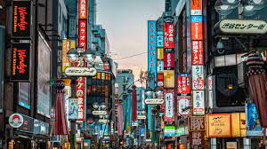

Tokyo is known for iconic landmarks like the Tokyo Skytree and Shibuya
Crossing. It's famous for its sakura tree-lined streets, shrines and
temples, its otaku culture and wonderful cuisine, and its world-class
transport system. It's a quirky city that combines millennia-old
traditions with futuristic technology. In fact, Tokyo has been called the
safest city in the world! The reputation of being safe ironically can make
Tokyo less safe if you let your guard down. As a crowded city, there is a
risk of petty crimes, but it is still quite low in comparison to many
other cities. Even if you've lived in Tokyo for years, you'll always find
something new to do there, with its countless museums, attractions, parks,
shops and so much more. As far as dining, there are simply thousands of
cafes and restaurants to choose from and shopping is also a fun pastime to
enjoy here.

A must to go to in Tokyo:
Meiji Jingu
Imperial Palace
Senso-ji
Tokyo Tower
Shinjuku Gyoen National Garder
Meiji Jingu
Meiji Jingu is one of Japan's most popular shrines. In the first days of
the New Year, the shrine regularly welcomes more than three million
visitors for the year's first prayers (hatsumode), more than any other
shrine or temple in the country. The Meiji period that followed the
Restoration was an era of major political, economic, and social change
in Japan. The reforms enacted during the Meiji emperor's rule brought
about the modernization and Westernization of the country and paved the
way for Japan to become a major international power.
Sensoji
Sensoji is the oldest temple in Tokyo, boasting over 1300 years of
history. Located in the popular sightseeing area of Asakusa, this temple
is especially famous for its large red lantern hanging at the entrance
gate called Kaminarimon. Legend has it that in 628 AD, fishermen found a
statue of Kannon in the Sumida River, and Sensoji Temple was built to
enshrine it. Throughout its long history, the Main Hall has been
destroyed countless times and rebuilt from the donations of people from
all over Japan.